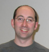
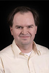
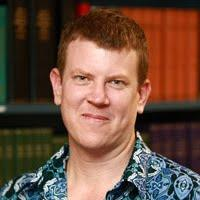
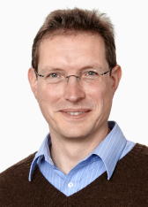
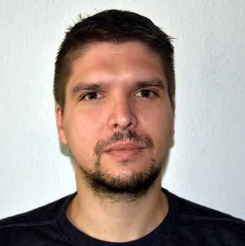
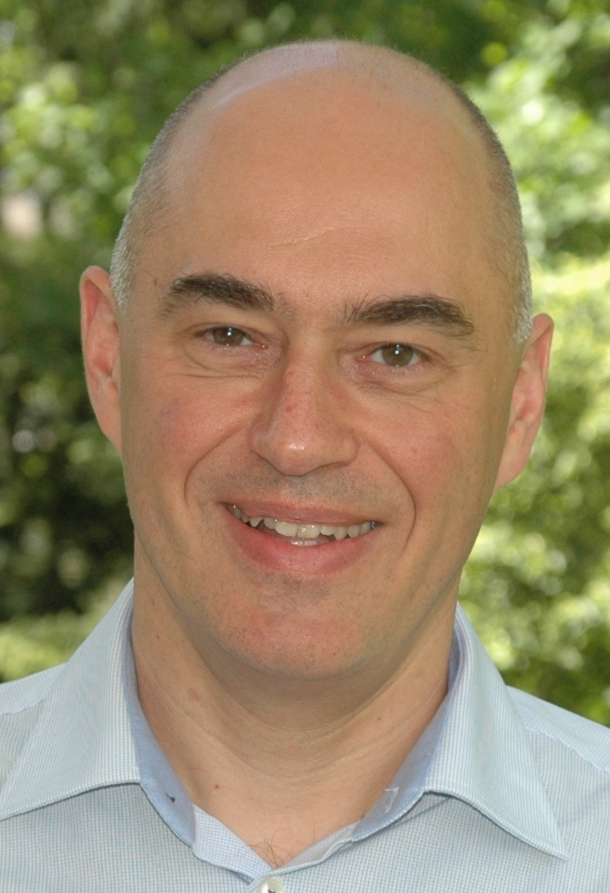
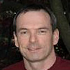
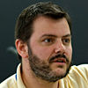

About
COMBINE is a network formed by the communities developing standards and formats to share computational models. Working together, it is expected that the federated projects will develop a set of interoperable standards covering all the aspects of computational modeling. Building on the experience of mature projects, which already have stable specifications, software support, user-base and community governance, COMBINE helps foster or support fledgling efforts aimed at filling gaps or new needs.
The standard description formats would ultimately cover the various types of models used in biology, the different views of a model and the different steps of the modeling and simulation activity. This matrix is currently sparse, but new projects are launched on a regular basis. See the our page on standards for a list of existing efforts.
Coordination
The various COMBINE activities are organized by a variety of individuals acknowledged on the relevant pages. The global COMBINE effort is led by the COMBINE Coordination Board with the current members of this board listed below and can be contacted at: combine-coord @ googlegroups.com. The process by which members are appointed to this board is described here.
|  | BioPAX Delegate Gary D. Bader (Ph.D. Biochemistry) works on biological network analysis and pathway information resources as an Associate Professor at The Donnelly Centre at the University of Toronto. He has been involved in leading development of protein interaction and pathway databases and standards, including the BioPAX biological pathways exchange language. |
| SBOL Visual Delegate Thomas Gorochowski (Ph.D. in Engineering Mathematics) is a Royal Society University Research Fellow and Lecturer at the University of Bristol, UK where he heads up the Biocompute Lab. His research is focused on better understanding how biological systems process information and exploiting synthetic biology techniques to rationally reprogram living cells with our own desired functions. Since 2016 he has been involved with the SBOL Data and Visual standards and is currently a member of the SBOL Scientific Steering Committee. |
 | SBML Delegate Sarah Keating (Ph.D. in Electronic and Electrical Engineering), Senior Software Developer at EBML-EBI. She has worked as a member of the SBML Team since 2002 and has on four separate occasions serves as an SBML Editor. |
|  | SBOL Delegate (Chair) Chris Myers (Ph.D. in Electrical Engineering) is a Professor of Electrical and Computer Engineering at the University of Utah. He conducts research in design automation for asynchronous electronic circuits, analog/mixed-signal circuits, and genetic circuits for which he was named an IEEE Fellow in 2013. He has been working in the fields of systems and synthetic biology for more than 10 years which led to the development of the iBioSim software and the textbook Engineering Genetic Circuits. During this time, he has been heavily involved in standards, previously serving as an SBML editor and currently as a member of the SBOL advisory board. |
|  | CellML Delegate David Nickerson (PhD in Bioengineering) is a senior research fellow at the Auckland Bioengineering Institute at the University of Auckland, New Zealand. He leads the Auckland Renal Physiome project as well as being involved in many computational modelling projects spanning the cellular, tissue, and whole organ spatial scales. David is involved in the development and application of the CellML and SED-ML standards and related software tools. He is also involved in the Physiome Model Repository. |
|  | SBGN Delegate Falk Schreiber (Ph.D in Computer Science) is Professor of Practical Computer Science and Computational Life Sciences in the Department of Computer and Information Science at the University of Konstanz, Germany. His interests include computational systems biology, modeling of metabolic systems, analysis and visualisation of biological networks, and immersive analytics in the life sciences. His group is developing various software tools including Vanted and SBGN-ED, as well as databases including MetaCrop. He is also involved in the development of SBGN. |
|  | SED-ML Delegate Matthias König (PhD. in Biophysics) leads an junior research group for Systems Biology and Systems Medicine of the Liver at the Humboldt-University Berlin. His research areas include computational modeling, data science, development of bioinformatics methods and machine learning based on biological, medical and clinical data. He has been actively involved in the development of SBML, SED-ML and software supporting these standards as well as the COMBINE archive. |
 | NeuroML Delegate Padraig Gleeson (Ph.D. in Computational Neuroscience) is a Principal Research Fellow at University College London. His work involves the development of the infrastructure to facilitate generation, analysis and sharing of biophysically detailed neuronal models. He is a member of the NeuroML Editorial Board, and has been an active technical contributor to the standard for many years. He is also the main developer of the application neuroConstruct and is project manager of the Open Source Brain Initiative. |
|  | Martin Golebiewski (Biochemist) works at HITS, a private non-profit institute in Heidelberg (Germany). His main interests are data management and integration for systems biology. He chairs the 'data processing and integration' working group of the ISO technical committee for biotechnology (ISO/TC 276) and co-leads the work package for “Data sources and standards for predictions in personalized medicine” of the European project EU-STANDS4PM. He is involved as data manager in the German Liver Systems Medicine network LiSyM and associated with the data management infrastructure FAIRDOM. Previously, he has coordinated the NormSys project and was involved in the reaction kinetics database SABIO-RK, as well as in the Infrastructure for Systems Biology Europe (ISBE). |
| Semantic annotation and medical informatics (Vice-Chair) Dagmar Waltemath (Ph.D. in Computer Science) is a professor of medical informatics at the University Medicine Greifswald. She is associated with the MIRACUM project, one of the four consortia of the German medical informatics initiative. Dagmar's research focuses on problems with biomedical data integration, including the development of strategies and tools for the management, provenance and integration of biomedical and clinical research data. Her group furthermore focuses on the integration of computational biology models and implementing their use in clinical research. Dagmar Waltemath has been actively involved in the development of SED-ML, SBML and the COMBINE Archive. |
Past coordinators
|  | SBML Delegate Michael Hucka (Ph.D. in Computer Science and Engineering), staff scientist at Caltech. He has chaired the SBML effort by community consensus since 2003. Today he works on all aspects of SBML and is involved with BioModels.net activities. |
|  | Nicolas Le Novère (Ph.D. in Molecular Pharmacology). Led a research group at the EMBL-EBI and the Babraham Institute. His interests included signal transduction and computational modeling of biological processes. His group participated to the development of BioModels Database and SBO. He was also involved in the development of SBML. |